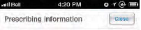
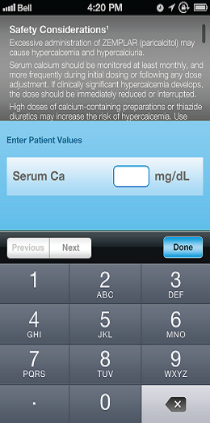
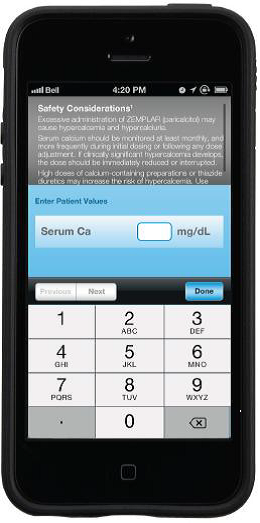
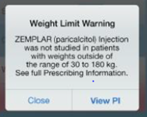

| Revision History: | |||
| Document Version Number | Document Revision Date | Written By | Change Summary (Reference section[s] changed) |
| 1.0 | 07/11/2013 | Robert Malick | Initial Writing |
| 2.0 | 08/15/2013 | Michelle Long | Updated per DHF-011-0029 Issue Resolution Report, 18 July 2013
|
| 3.0 | 8/30/2013 | Michelle Long | Protocol version 2.0 preapproved as black and white protocol and color document required. Updated tables to ensure header rows printed on correct page. |
| 4.0 | 2/7/2014 | Julie Fritchley | Per DHF-011-0029, Test Case 1, Step 1.10 Actual Result text corrected to remove EULA reference and replace with User Guide reference. Add additional PR1, PR2, PR3, and PR18 references for coverage. Inserted test steps for Tutorial module per DHF-011-0036 Updated User Instruction and ISI steps per DHF-011-0035 Updated applicable steps to account for iOS 6 and iOS & differences per DHF-011-0037 Mapped GUI requirements in Actual Results column for traceability |
| 5.0 | 3/10/2014 | Julie Fritchley | Addition of Addendum A to define steps for critical functionality and regression testing for ZemPro V1.1 |
| 6.0 | 4/2/2014 | Julie Fritchley | Correction of test script errors and traceability references on the following steps:
Addition of Addendum B |
| Protocol Pre-Approval Prior to Execution: | |||||
| Device Development/Technical Representative: | |||||
| Printed Name | Signature * | Date | |||
| Quality Assurance: | |||||
| Printed Name | Signature * | Date | |||
| Approval may be obtained electronically. | |||||
| PR# | Product Requirement |
| PR1 | The app shall provide electronic access to the US Prescribing information. |
| PR2 | The app shall provide electronic access to the Important Safety Information. |
| PR3 | The app shall provide electronic access to the End User License Agreement. |
| PR11 | The app user interface shall incorporate signs, symbols, and markings, and Software User Interface guidelines from ANSI/AAMI HE75:2009. |
| PR12 | The app shall incorporate Zemplar branding and AbbVie brand style guidelines. |
| PR13 | The app shall be provided in the English language. |
| PR18 | The app shall display the End User License Agreement and require acceptance of terms and conditions the first time after installation and after each software update. |
| PR19 | The app shall require confirmation of health care provider status. |
| PR24 | The app shall provide Instructions for Use. |
| Test Environment Configuration: | #TEC# #PRODNAME# v #PRODVER# Build |
| Mobile Device Platform: | #MDP# |
| Model #: | #Model# |
| Serial #: | #Serial# |
| iOS Version: | #IosVersion# |
| Tester Printed Name and Signature: | #TPNS# |
| Start of Test Date: | #SDate# |
| End of Test Date: | #EDate# |
| DHF-011-0013 Version: | #DHFVersion# |
| PIFU-0010 Version: | #PIFUVersion# |
| Zemplar Injection Important Safety Information Document Number: | #SafetyInfoVersion# |
| ZEMPLAR (paricalcitol) Injection PI Document Number: | #InjectionPIVersion# |
|  iOS6 navigation bar |
iOS7 navigation bar |
|  iOS6 keypad |
 iOS7 keypad |
iOS6 notification |
 iOS7 notification |
| Description/Action | Comments | |
| 1. | Confirm a new installation of the ZemPro application is on the mobile device and “ZemPro” icon is displayed on the home screen of mobile device | |
| 2. | Turn off Internet Service. |
| Step | Description/Action | Expected Results | Actual Results | Comments | Pass/Fail | ||
| Step# | Tester Comments | ReviewerComments | Resolution |
| Technical Responsible Review Comments/ Signature/ Date: |
| Quality Assurance Review Comments/ Signature/ Date (for quality-related systems): |
Below listed are the Steps identified in DHF-011-0027 V5.0 for execution of Critical Functionality as identified in DHF-011-0045.
| Critical Functionality | DHF-011-0027 V4.0 Step number | GUI Reference # |
| Dose Initiation enter Patient Values | 2.01 | 5.9.0.1 |
| Keypad entry- Ca | 2.02 | 5.9.0.1 |
| Keypad entry- P | 2.03 | 5.9.0.1 |
| Keypad entry- Weight | 2.04 | 5.9.0.1 |
| Dose Initiation-Recommended dose and Optional Conversion | 2.06 | 5.9.2.5.3 |
| Dose Titration Enter Patient Values | 2.08 | 5.9.0.1 |
| Keypad entry- Ca | 2.09 | 5.9.0.1 |
| Keypad entry-P | 2.10 | 5.9.0.1 |
| Keypad entry-Prior PTH | 2.11 | 5.9.0.1 |
| Keypad entry-current PTH | 2.12 | 5.9.0.1 |
| Prior Dose | 2.15 | 5.9.0.1 |
| Keypad -Prior Dose | 2.16 | 5.9.0.1 |
| New Dose Range | 2.17 | 5.9.2.5.10 |
| Dose Initiation Warning Serum Ca | 3.01 | 5.9.0.1 |
| Dose Initiation Warning Serum P | 3.03 | 5.9.0.1 |
| Dose Initiation Warning Weight | 3.07 | 5.9.0.1 |
| Dose Titration Warning Serum Ca | 4.01 | 5.9.0.1 |
| Dose Titration Warning Serum P | 4.03 | 5.9.0.1 |
| Dose Titration Warning Prior PTH | 4.07 | 5.9.0.1 |
| Dose Titration Warning Current PTH | 4.09 | 5.9.0.1 |
Below listed are the steps identified in DHF-011-0027 V5.0 for regression testing of Design Changes incorporated into ZemPro V1.1 per DHF-011-0035, DHF-011-0036 and DHF-011-0037.
| Design Verification Regression for GUI | |
| ZemPro V1.1 | DHF-011-0027 V4.0 Step number |
| Splash Page Logo | 1.02 |
| ISI module content- PIFU change | 1.04 |
| Initial Tutorial | 1.05-1.16 |
| Home Page Logo | 1.17 |
| More Menu- Tutorial option | 1.20 |
| More - Tutorial | 1.25-1.36 |
| More User Guide- PIFU | 1.23 |
| Dose Initiation Result - ZEMPLAR Brand | 2.06 |
| Dose Titration Result- ZEMPLAR Brand | 2.14 |
| Dose Titration Result- ZEMPLAR Brand | 2.18 |
| Dose Titration Result- ZEMPLAR Brand | 2.19 |
| Dose Titration Result- ZEMPLAR Brand | 2.20 |
| Dose Titration Result- ZEMPLAR Brand | 2.21 |
| Dose Titration Result- ZEMPLAR Brand | 2.22 |
| Initial Dose Range More Info ZEMPLAR Brand | 3.09 |
| Optional Conversion More Info ZEMPLAR Brand | 3.10 |
| Prior Dose Add Info- ZEMPLAR Brand | 4.12 |
| Prior Dose Warning Notification ZEMPLAR Brand | 4.13 |
Note to Tester for abbreviated execution: The execution of intermediate steps may be needed and should be used to navigate to steps required for execution; however documentation of this navigation is not necessary. Tester should “N/A” Expected Results, Actual Results and Pass/Fail columns to indicate when test step content has not been verified. When navigating between test cases, it is not required that tester exit the application at the end of a test case if the Home page is the starting step of the following test case and no device setup is required.
Below listed are the Steps identified in DHF-011-0027 V6.0 for execution of Critical Functionality as identified in DHF-011-0045 per devices identified in DHF-011-0046 V2.0 Appendix II.
| Critical Functionality | DHF-011-0027 V4.0 Step number | GUI Reference # |
| Dose Initiation enter Patient Values | 2.01 | 5.9.0.1 |
| Keypad entry- Ca | 2.02 | 5.9.0.1 |
| Keypad entry- P | 2.03 | 5.9.0.1 |
| Keypad entry- Weight | 2.04 | 5.9.0.1 |
| Dose Initiation-Recommended dose and Optional Conversion | 2.06 | 5.9.2.5.3 |
| Dose Titration Enter Patient Values | 2.08 | 5.9.0.1 |
| Keypad entry- Ca | 2.09 | 5.9.0.1 |
| Keypad entry-P | 2.10 | 5.9.0.1 |
| Keypad entry-Prior PTH | 2.11 | 5.9.0.1 |
| Keypad entry-current PTH | 2.12 | 5.9.0.1 |
| Prior Dose | 2.15 | 5.9.0.1 |
| Keypad -Prior Dose | 2.16 | 5.9.0.1 |
| New Dose Range | 2.17 | 5.9.2.5.10 |
| Dose Initiation Warning Serum Ca | 3.01 | 5.9.0.1 |
| Dose Initiation Warning Serum P | 3.03 | 5.9.0.1 |
| Dose Initiation Warning Weight | 3.07 | 5.9.0.1 |
| Dose Titration Warning Serum Ca | 4.01 | 5.9.0.1 |
| Dose Titration Warning Serum P | 4.03 | 5.9.0.1 |
| Dose Titration Warning Prior PTH | 4.07 | 5.9.0.1 |
| Dose Titration Warning Current PTH | 4.09 | 5.9.0.1 |
Below listed are the steps identified in DHF-011-0027 V6.0 for regression testing of software defect fixes in ZemPro V1.1 build 4 Stage as documented in DHF-011-0027-1, DHF-011-0027-2 and DHF-011-0027-8 per devices identified in DHF-011-0046 V2.0 Appendix II.
| Design Verification Regression for GUI | |
| ZemPro V1.1 | DHF-011-0027 V6.0 Step number |
| Initial Tutorial | 1.05-1.16 |
| More Tutorial | 1.25-1.36 |
| Mcg/kg wheel display | 2.07* |
| Prior Dose Keypad text “Enter Patient Values” | 2.16* |
*These steps are to be included with testing of the application on devices for critical functionality as noted above
|
|
|